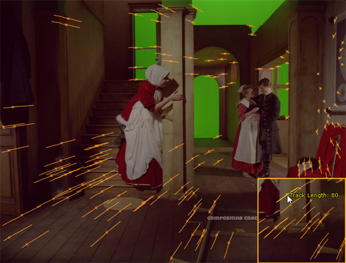

跟踪完成后，浏览时间线以检查跟踪的特征。这些点表示为关联特征计算的轨迹长度的特征和向量。将鼠标悬停在一个点上以帧为单位显示其长度。

考虑屏蔽出轨迹一直被播种和拒绝的区域，如高反射表面，并调整 设置 标签 跟踪 控制以提高轨道可靠性。
请参阅 屏蔽图像的区域 和 故障排除序列轨道 欲了解更多信息。
详细的跟踪信息显示在 “属性” 面板的曲线中 自动跟踪 标签。您可以一次选择所有轨迹曲线，或者获得一条曲线的更详细视图，例如 Num 轨道 .
提示: 按 F 聚焦在曲线上可以在可用空间中最大化选定曲线。
|
|
|
| 选择所有轨迹曲线。 | 构建一条曲线。 |
曲线可以指示跟踪遇到问题的序列区域。例如，右侧的 “轨迹数” 曲线在当前帧上显示了显著的倾斜，如播放头位置所示。
在这种情况下，您可以尝试调整 功能数量 或 最小长度 并重新追踪。请参阅 故障排除序列轨道
|
|